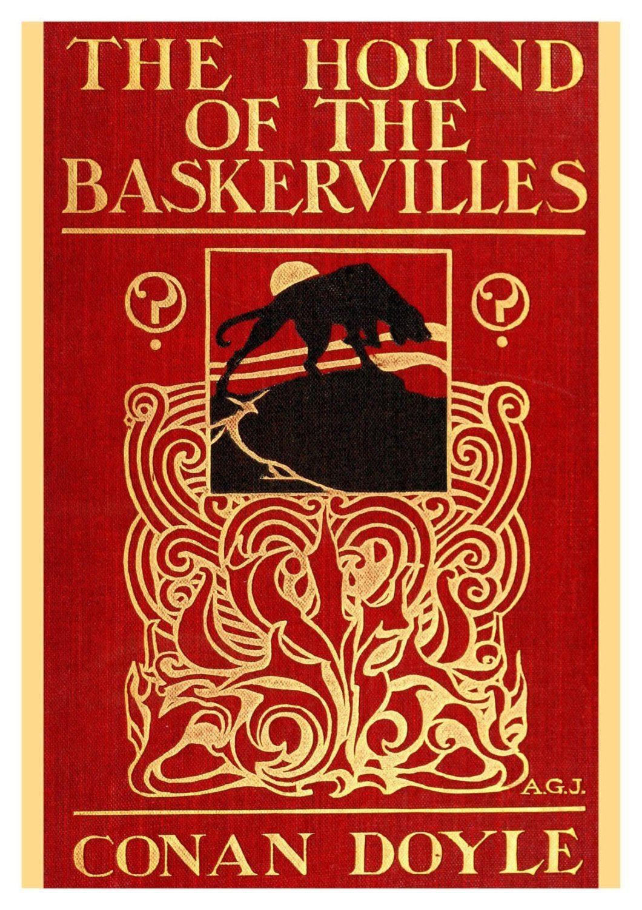

The book review
The Hound of the Baskervilles
A family curse, a lonely moor, and a legendary hound make for one of Holmes's most atmospheric mysteries.
Overall review
This is a wonderfully moody Sherlock Holmes mystery, pairing a compelling investigation with the eerie quiet of the Devonshire moors. Its creeping sense of danger makes it one of the most memorable Holmes adventures.
Review in detail
The story builds suspense through isolated landscapes, local legends, and carefully placed clues. Watson's perspective lets the atmosphere deepen while Holmes works from a distance, and the eventual explanations bring the supernatural rumours back to a satisfying logic.
Who should read it
Pick this up if you like classic detective fiction with a gothic edge, atmospheric settings, and a mystery that gives its characters room to breathe.